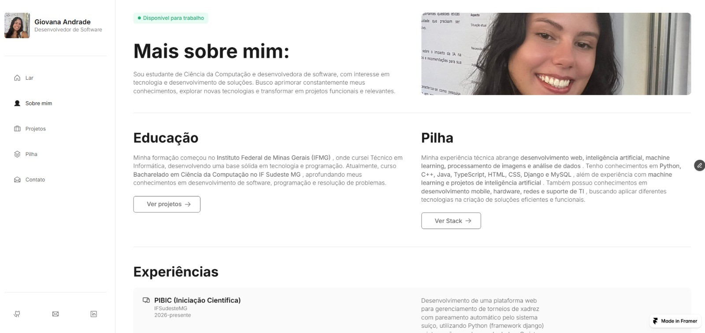

Pular para o conteúdo
Giovana Andrade
Software Developer
☰
Abrir menu
⌂
Home
○
Sobre mim
▦
Projetos
◈
Stack
↗
Contato
GitHub
Gmail
LinkedIn
Available for Work
Meus Projetos:
↗
Machine Learning
Avaliação de métodos computacionais para a detecção do glaucoma em imagens retinianas
↗
CyberSecurity
Detecção de possíveis ataques de negação de serviço (DoS)
↗
Article
Inteligência Artificial na Educação

↗
Design
Portifólio (no Framer)
↗
CRUD completo
ChessMath
↗
Mobile
NaCarteira
 ↗
↗